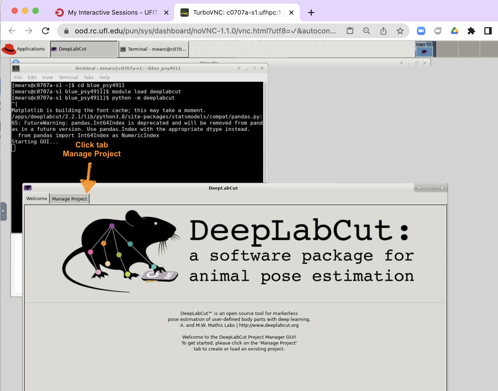

Steps to start DeepLabCut in graphical user interface mode:
- Log on to HiPerGator (HPG)
- Use HPG OpenOnDemand to start the Interactive App: HiPerGator Desktop
- Open Terminal to enter 3 lines of command-line code to start DLC GUI
- Point DLC to a config.yaml file in existing project
- Point DLC to a labeled videos directory and load the images
Log on to HiPerGator (HPG) OpenOnDemand
Use a Chrome Browser for best results.
Importantly, go to (linked UFRC page) for details & video on HiPerGator-OpenOnDemand
Type this address in the navigation bar: - https://ondemand.rc.ufl.edu
You will need to type then select University of Florida for your home organization.
Use 2-factor authentication just like Canvas or Gatormail.
Use HPG OpenOnDemand to start the Interactive App: HiPerGator Desktop
When options for the desktop are available (see 2nd next figure below):
- 10 or more Gb of Max Memory (third text box)
- 1 to 4 hours for Time Requested (4th text box)
- select Default Cluster Partition (5th box dropdown)
- BUT, If you’re training the model with GPU settings select the GPU cluster partition. [ONLY for neural-network training; Use the Default cluster partition for image labeling and adjusting labels. We have limited GPU resources.]
- However, with GPU selected you will also need to type
gpu:a100:1in the Generic Resource Request field (2nd text box from bottom of page.)
- However, with GPU selected you will also need to type
- BUT, If you’re training the model with GPU settings select the GPU cluster partition. [ONLY for neural-network training; Use the Default cluster partition for image labeling and adjusting labels. We have limited GPU resources.]
After you have typed the settings click blue Launch button(s) as they appear (see the bottom of 2rd & 3rd figures, below)
Open Terminal to enter 3 lines of command-line code to start DLC GUI
- Click on Applications
- In HiPerGator Linux Desktop, the Applications button is on the top-left corner.
- Click on Terminal Emulator
In the Terminal (i.e., black, command line interface) type the following 3 lines:
cd blue_psy4911module load deeplabcutpython -m deeplabcut
Point DLC to a config.yaml file in existing project
- Click on tab, Manage Project, when the DeepLabCut GUI appears.
- Then, click Load existing project & Browse in order to find config.yaml settings file.
- The folder location is something like:
- /blue/psy4911/
/try-dlc/DeepLabCut/examples/openfield-Pranav-2018-10-30/config.yaml
- /blue/psy4911/
- Once you select config.yaml click the open button and the click ok again.

Point DLC to a labeled videos directory and load the “images”